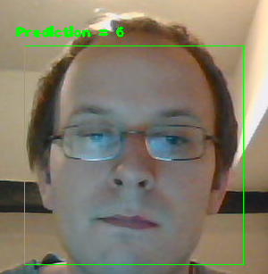

不断维护的地址：http://plzcoding.com/face-recognition-with-opencv/
怎样使用OpenCV进行人脸识别
本文大部分来自OpenCV官网上的Face Reconition with OpenCV这节内容(http://docs.opencv.org/modules/contrib/doc/facerec/facerec_tutorial.html)，小弟我尝试翻译一些重要内容。这部分内容是Philipp Wagner写的，他的github：https://github.com/bytefish，他的网站http://www.bytefish.de/，应该是个德国人。下面应该是他的照片。

友情提示，要看懂代码前，你得先知道OpenCV的安装和配置，会用C++，用过一些OpenCV函数。基本的图像处理和矩阵知识也是需要的。[gm:我是箫鸣的注释]由于我仅仅是翻译，对于六级才过的我，肯定有一些翻译错的或者不当的地方，所以请大家纠错。
1.1.介绍Introduction
从OpenCV2.4开始，加入了新的类FaceRecognizer，我们可以使用它便捷地进行人脸识别实验。本文既介绍代码使用，又介绍算法原理。(他写的源代码，我们可以在OpenCV的opencv\modules\contrib\doc\facerec\src下找到，当然也可以在他的github中找到，如果你想研究源码，自然可以去看看，不复杂)
目前支持的算法有
Eigenfaces特征脸createEigenFaceRecognizer()
Fisherfaces createFisherFaceRecognizer()
LocalBinary Patterns Histograms局部二值直方图 createLBPHFaceRecognizer()
下面所有的例子中的代码在OpenCV安装目录下的samples/cpp下面都能找到，所有的代码商用或者学习都是免费的。
1.2.人脸识别Face Recognition
对人类来说，人脸识别很容易。文献[Tu06]告诉我们，仅仅是才三天的婴儿已经可以区分周围熟悉的人脸了。那么对于计算机来说，到底有多难？其实，迄今为止，我们对于人类自己为何可以区分不同的人所知甚少。是人脸内部特征(眼睛、鼻子、嘴巴)还是外部特征(头型、发际线)对于人类识别更有效?我们怎么分析一张图像，大脑是如何对它编码的？David Hubel和TorstenWiesel向我们展示，我们的大脑针对不同的场景，如线、边、角或者运动这些局部特征有专门的神经细胞作出反应。显然我们没有把世界看成零散的块块，我们的视觉皮层必须以某种方式把不同的信息来源转化成有用的模式。自动人脸识别就是如何从一幅图像中提取有意义的特征，把它们放入一种有用的表示方式，然后对他们进行一些分类。基于几何特征的人脸的人脸识别可能是最直观的方法来识别人脸。第一个自动人脸识别系统在[Kanade73]中又描述：标记点(眼睛、耳朵、鼻子等的位置)用来构造一个特征向量(点与点之间的距离、角度等)。通过计算测试和训练图像的特征向量的欧氏距离来进行识别。这样的方法对于光照变化很稳健，但也有巨大的缺点：标记点的确定是很复杂的，即使是使用最先进的算法。一些几何特征人脸识别近期工作在文献[Bru92]中有描述。一个22维的特征向量被用在一个大数据库上，单靠几何特征不能提供足够的信息用于人脸识别。
特征脸方法在文献[TP91]中有描述，他描述了一个全面的方法来识别人脸：面部图像是一个点，这个点是从高维图像空间找到它在低维空间的表示，这样分类变得很简单。低维子空间低维是使用主元分析(Principal Component Analysis,PCA)找到的，它可以找拥有最大方差的那个轴。虽然这样的转换是从最佳重建角度考虑的，但是他没有把标签问题考虑进去。[gm:读懂这段需要一些机器学习知识]。想象一个情况，如果变化是基于外部来源，比如光照。轴的最大方差不一定包含任何有鉴别性的信息，因此此时的分类是不可能的。因此，一个使用线性鉴别(Linear Discriminant Analysis,LDA)的特定类投影方法被提出来解决人脸识别问题[BHK97]。其中一个基本的想法就是，使类内方差最小的同时，使类外方差最大。
近年来，各种局部特征提取方法出现。为了避免输入的图像的高维数据，仅仅使用的局部特征描述图像的方法被提出，提取的特征(很有希望的)对于局部遮挡、光照变化、小样本等情况更强健。有关局部特征提取的方法有盖伯小波(Gabor Waelets)([Wiskott97])，离散傅立叶变换(DiscreteCosinus Transform,DCT)([Messer06])，局部二值模式(LocalBinary Patterns,LBP)([AHP04])。使用什么方法来提取时域空间的局部特征依旧是一个开放性的研究问题，因为空间信息是潜在有用的信息。
1.3.人脸库Face Database
我们先获取一些数据来进行实验吧。我不想在这里做一个幼稚的例子。我们在研究人脸识别，所以我们需要一个真的人脸图像！你可以自己创建自己的数据集，也可以从这里(http://face-rec.org/databases/)下载一个。
AT&TFacedatabase又称ORL人脸数据库，40个人，每人10张照片。照片在不同时间、不同光照、不同表情(睁眼闭眼、笑或者不笑)、不同人脸细节(戴眼镜或者不戴眼镜)下采集。所有的图像都在一个黑暗均匀的背景下采集的，正面竖直人脸(有些有有轻微旋转)。
YaleFacedatabase A ORL数据库对于初始化测试比较适合，但它是一个简单的数据库，特征脸已经可以达到97%的识别率，所以你使用其他方法很难得到更好的提升。Yale人脸数据库是一个对于初始实验更好的数据库，因为识别问题更复杂。这个数据库包括15个人(14个男人,1个女人)，每一个都有11个灰度图像，大小是320*243像素。数据库中有光照变化(中心光照、左侧光照、右侧光照)、表情变化(开心、正常、悲伤、瞌睡、惊讶、眨眼)、眼镜(戴眼镜或者没戴)。
坏消息是它不可以公开下载，可能因为原来的服务器坏了。但我们可以找到一些镜像(比如 theMIT)但我不能保证它的完整性。如果你需要自己剪裁和校准图像，可以阅读我的笔记(bytefish.de/blog/fisherfaces)。
ExtendedYale Facedatabase B 此数据库包含38个人的2414张图片，并且是剪裁好的。这个数据库重点是测试特征提取是否对光照变化强健，因为图像的表情、遮挡等都没变化。我认为这个数据库太大，不适合这篇文章的实验，我建议使用ORL数据库。
1.3.1. 准备数据
我们从网上下了数据，下了我们需要在程序中读取它，我决定使用CSV文件读取它。一个CSV文件包含文件名，紧跟一个标签。
/path/to/image.ext;0
假设/path/to/image.ext是图像，就像你在windows下的c:/faces/person0/image0.jpg。最后我们给它一个标签0。这个标签类似代表这个人的名字，所以同一个人的照片的标签都一样。我们对下载的ORL数据库进行标识，可以获取到如下结果：
./at/s1/1.pgm;0
./at/s1/2.pgm;0
...
./at/s2/1.pgm;1
./at/s2/2.pgm;1
...
./at/s40/1.pgm;39
./at/s40/2.pgm;39
想象我已经把图像解压缩在D:/data/at下面，而CSV文件在D:/data/at.txt。下面你根据自己的情况修改替换即可。一旦你成功建立CSV文件，就可以像这样运行示例程序：
facerec_demo.exe D:/data/at.txt
1.3.2 Creating the CSV File
你不需要手工来创建一个CSV文件，我已经写了一个Python程序来做这事。
[gm:说一个我实现的方法
如果你会cmd命令，或者称DOS命令，那么你打开命令控制台。假设我们的图片放在J:下的Faces文件夹下，可以输入如下语句：
J:\Faces\ORL>dir /b/s *.bmp > at.txt
然后你打开at.txt文件可能看到如下内容(后面的0，1..标签是自己加的)：
。。。。
J:\Faces\ORL\s1\1.bmp;0
J:\Faces\ORL\s1\10.bmp;0
J:\Faces\ORL\s1\2.bmp;0
J:\Faces\ORL\s1\3.bmp;0
J:\Faces\ORL\s1\4.bmp;0
J:\Faces\ORL\s1\5.bmp;0
J:\Faces\ORL\s1\6.bmp;0
J:\Faces\ORL\s1\7.bmp;0
J:\Faces\ORL\s1\8.bmp;0
J:\Faces\ORL\s1\9.bmp;0
J:\Faces\ORL\s10\1.bmp;1
J:\Faces\ORL\s10\10.bmp;1
J:\Faces\ORL\s10\2.bmp;1
J:\Faces\ORL\s10\3.bmp;1
J:\Faces\ORL\s10\4.bmp;1
J:\Faces\ORL\s10\5.bmp;1
J:\Faces\ORL\s10\6.bmp;1
。。。。
自然还有c++编程等方法可以做得更好，看这篇文章反响，如果很多人需要，我就把这部分的代码写出来。(遍历多个文件夹，标上标签)
]
特征脸Eigenfaces
我们讲过，图像表示的问题是他的高维问题。二维灰度图像p*q大小，是一个m=qp维的向量空间，所以一个100*100像素大小的图像就是10，000维的图像空间。问题是，是不是所有的维数空间对我们来说都有用？我们可以做一个决定，如果数据有任何差异，我们可以通过寻找主元来知道主要信息。主成分分析(Principal Component Analysis,PCA)是KarlPearson (1901)独立发表的，而 Harold Hotelling (1933)把一些可能相关的变量转换成一个更小的不相关的子集。想法是，一个高维数据集经常被相关变量表示，因此只有一些的维上数据才是有意义的，包含最多的信息。PCA方法寻找数据中拥有最大方差的方向，被称为主成分。
令  表示一个随机特征，其中
表示一个随机特征，其中  .
.
- 计算均值向量


- 计算协方差矩阵 S

- 计算 的特征值
 和对应的特征向量
和对应的特征向量 

- 对特征值进行递减排序，特征向量和它顺序一致. K个主成分也就是k个最大的特征值对应的特征向量。
x的K个主成份:

其中 .
.
PCA基的重构:

其中  .
.
然后特征脸通过下面的方式进行人脸识别：
A． 把所有的训练数据投影到PCA子空间
B． 把待识别图像投影到PCA子空间
C． 找到训练数据投影后的向量和待识别图像投影后的向量最近的那个。
还有一个问题有待解决。比如我们有400张图片，每张100*100像素大小，那么PCA需要解决协方差矩阵  的求解，而X的大小是10000*400，那么我们会得到10000*10000大小的矩阵，这需要大概0.8GB的内存。解决这个问题不容易，所以我们需要另一个计策。就是转置一下再求，特征向量不变化。文献 [Duda01]中有描述。
的求解，而X的大小是10000*400，那么我们会得到10000*10000大小的矩阵，这需要大概0.8GB的内存。解决这个问题不容易，所以我们需要另一个计策。就是转置一下再求，特征向量不变化。文献 [Duda01]中有描述。
[gm:这个PCA还是自己搜着看吧，这里的讲的不清楚，不适合初学者看]
OpenCV中使用特征脸Eigenfaces in OpenCV
给出示例程序源代码
#include "opencv2/core/core.hpp"
#include "opencv2/contrib/contrib.hpp"
#include "opencv2/highgui/highgui.hpp"
#include <iostream>
#include <fstream>
#include <sstream>
usingnamespace cv;
usingnamespace std;
static Mat norm_0_255(InputArray _src) {
Mat src = _src.getMat();
// 创建和返回一个归一化后的图像矩阵:
Mat dst;
switch(src.channels()) {
case1:
cv::normalize(_src, dst, 0,255, NORM_MINMAX, CV_8UC1);
break;
case3:
cv::normalize(_src, dst, 0,255, NORM_MINMAX, CV_8UC3);
break;
default:
src.copyTo(dst);
break;
}
return dst;
}
//使用CSV文件去读图像和标签，主要使用stringstream和getline方法
staticvoid read_csv(const string& filename, vector<Mat>& images, vector<int>& labels, char separator =';') {
std::ifstream file(filename.c_str(), ifstream::in);
if (!file) {
string error_message ="No valid input file was given, please check the given filename.";
CV_Error(CV_StsBadArg, error_message);
}
string line, path, classlabel;
while (getline(file, line)) {
stringstream liness(line);
getline(liness, path, separator);
getline(liness, classlabel);
if(!path.empty()&&!classlabel.empty()) {
images.push_back(imread(path, 0));
labels.push_back(atoi(classlabel.c_str()));
}
}
}
int main(int argc, constchar*argv[]) {
// 检测合法的命令，显示用法
// 如果没有参数输入则退出！.
if (argc <2) {
cout <<"usage: "<< argv[0]<<" <csv.ext> <output_folder> "<< endl;
exit(1);
}
string output_folder;
if (argc ==3) {
output_folder = string(argv[2]);
}
//读取你的CSV文件路径.
string fn_csv = string(argv[1]);
// 2个容器来存放图像数据和对应的标签
vector<Mat> images;
vector<int> labels;
// 读取数据. 如果文件不合法就会出错
// 输入的文件名已经有了.
try {
read_csv(fn_csv, images, labels);
} catch (cv::Exception& e) {
cerr <<"Error opening file \""<< fn_csv <<"\". Reason: "<< e.msg << endl;
// 文件有问题，我们啥也做不了了，退出了
exit(1);
}
// 如果没有读取到足够图片，我们也得退出.
if(images.size()<=1) {
string error_message ="This demo needs at least 2 images to work. Please add more images to your data set!";
CV_Error(CV_StsError, error_message);
}
// 得到第一张照片的高度. 在下面对图像
// 变形到他们原始大小时需要
int height = images[0].rows;
// 下面的几行代码仅仅是从你的数据集中移除最后一张图片
//[gm:自然这里需要根据自己的需要修改，他这里简化了很多问题]
Mat testSample = images[images.size() -1];
int testLabel = labels[labels.size() -1];
images.pop_back();
labels.pop_back();
// 下面几行创建了一个特征脸模型用于人脸识别，
// 通过CSV文件读取的图像和标签训练它。
// T这里是一个完整的PCA变换
//如果你只想保留10个主成分，使用如下代码
// cv::createEigenFaceRecognizer(10);
//
// 如果你还希望使用置信度阈值来初始化，使用以下语句：
// cv::createEigenFaceRecognizer(10, 123.0);
//
// 如果你使用所有特征并且使用一个阈值，使用以下语句：
// cv::createEigenFaceRecognizer(0, 123.0);
//
Ptr<FaceRecognizer> model = createEigenFaceRecognizer();
model->train(images, labels);
// 下面对测试图像进行预测，predictedLabel是预测标签结果
int predictedLabel = model->predict(testSample);
//
// 还有一种调用方式，可以获取结果同时得到阈值:
// int predictedLabel = -1;
// double confidence = 0.0;
// model->predict(testSample, predictedLabel, confidence);
//
string result_message = format("Predicted class = %d / Actual class = %d.", predictedLabel, testLabel);
cout << result_message << endl;
// 这里是如何获取特征脸模型的特征值的例子，使用了getMat方法:
Mat eigenvalues = model->getMat("eigenvalues");
// 同样可以获取特征向量:
Mat W = model->getMat("eigenvectors");
// 得到训练图像的均值向量
Mat mean = model->getMat("mean");
// 现实还是保存:
if(argc==2) {
imshow("mean", norm_0_255(mean.reshape(1, images[0].rows)));
} else {
imwrite(format("%s/mean.png", output_folder.c_str()), norm_0_255(mean.reshape(1, images[0].rows)));
}
// 现实还是保存特征脸:
for (int i =0; i < min(10, W.cols); i++) {
string msg = format("Eigenvalue #%d = %.5f", i, eigenvalues.at<double>(i));
cout << msg << endl;
// 得到第 #i个特征
Mat ev = W.col(i).clone();
//把它变成原始大小，为了把数据显示归一化到0~255.
Mat grayscale = norm_0_255(ev.reshape(1, height));
// 使用伪彩色来显示结果，为了更好的感受.
Mat cgrayscale;
applyColorMap(grayscale, cgrayscale, COLORMAP_JET);
// 显示或者保存:
if(argc==2) {
imshow(format("eigenface_%d", i), cgrayscale);
} else {
imwrite(format("%s/eigenface_%d.png", output_folder.c_str(), i), norm_0_255(cgrayscale));
}
}
// 在一些预测过程中，显示还是保存重建后的图像:
for(int num_components =10; num_components <300; num_components+=15) {
// 从模型中的特征向量截取一部分
Mat evs = Mat(W, Range::all(), Range(0, num_components));
Mat projection = subspaceProject(evs, mean, images[0].reshape(1,1));
Mat reconstruction = subspaceReconstruct(evs, mean, projection);
// 归一化结果，为了显示:
reconstruction = norm_0_255(reconstruction.reshape(1, images[0].rows));
// 显示或者保存:
if(argc==2) {
imshow(format("eigenface_reconstruction_%d", num_components), reconstruction);
} else {
imwrite(format("%s/eigenface_reconstruction_%d.png", output_folder.c_str(), num_components), reconstruction);
}
}
// 如果我们不是存放到文件中，就显示他，这里使用了暂定等待键盘输入:
if(argc==2) {
waitKey(0);
}
return0;
}
我使用了伪彩色图像，所以你可以看到在特征脸中灰度值是如何分布的。你可以看到特征脸不但对人脸特征进行编码，还对这些图像中的光照进行编码。(看第四张图像是左侧的光照，而第五张是右侧的光照)[gm:PCA对光照变化图像识别效果很差，自然有一些改进方法，有后再谈]

我们已经看到了，我们可以利用低维近似来重构人脸，我们看看对于一个好的重构，需要多少特征脸。我将依次画出10，30，。。310张特征脸时的效果。
for(int num_components =10; num_components <300; num_components+=15) {
Mat evs = Mat(W, Range::all(), Range(0, num_components));
Mat projection = subspaceProject(evs, mean, images[0].reshape(1,1));
Mat reconstruction = subspaceReconstruct(evs, mean, projection);
reconstruction = norm_0_255(reconstruction.reshape(1, images[0].rows));
if(argc==2) {
imshow(format("eigenface_reconstruction_%d", num_components), reconstruction);
} else {
imwrite(format("%s/eigenface_reconstruction_%d.png", output_folder.c_str(), num_components), reconstruction);
}
}
显然10个特征向量[gm:1个特征向量可以变形成一个特征脸，这里特征向量和特征脸概念有些近似]是不够的，50个特征向量可以有效的编码出重要的人脸特征。在ORL数据库中，当使用300个特征向量时，你将获取一个比较好的和重构结果。有定理指出重构需要选择多少特征脸才合适，但它严重依赖于人脸数据库。[gm:也就是没啥讨论意义，针对现实情况做出考虑吧]。文献[Zhao03]是一个好的开始研究起点。

主成分分析是一种基于特征脸的方法，找到使数据中最大方差的特征线性组合。这是一个表现数据的强大方法，但它没有考虑类别信息，并且在扔掉主元时，同时许多有鉴别的信息都被扔掉。假设你数据库中的变化主要是光照变化，那么PCA此时几乎失效了。[gm:把光照情况类似的照片认为一样，而不管人脸其他细节]可以看去http://www.bytefish.de/wiki/pca_lda_with_gnu_octave 看下例子。
线性鉴别分析在降维的同时考虑类别信息，由统计学家 Sir R. A. Fisher发明。在他1936年的文献中，他成功对花进行了分类：The useof multiple measurements in taxonomic problems [Fisher36]。为了找到一种特征组合方式，达到最大的类间离散度和最小的类内离散度。这个想法很简单：在低维表示下，相同的类应该紧紧的聚在一起，而不同的类别尽量距离越远。 这也被Belhumeur, Hespanha 和 Kriegman所认同，所以他们把鉴别分析引入到人脸识别问题中[BHK97]。
令x是一个来自c个类中的随机向量，

散度矩阵  和S_{W}如下计算:
和S_{W}如下计算:

, 其中  是全部数据的均值
是全部数据的均值  :
:
而 是某个类的均值
是某个类的均值 :
:

Fisher的分类算法可以看出一个投影矩阵 , 使得类的可分性最大:
, 使得类的可分性最大:

接下来 [BHK97], 一个解决这个普通特征值优化问题的方法被提出:

还有一个问题未解决， Sw的排列最多只有 （N-c）, N 个样本和c个类别。在模式识别中，样本数据个数N的大小一般小于输入数据的维数。 [gm:比如说之前的图片，N=400，而10000就是数据维数]那么，散度矩阵Sw就是奇异的(可以看文献[RJ91])。在文献[BHK97]中，使用PCA把数据投影到(N-c)维的子空间，然后再使用线性鉴别分析，因为Sw不是奇异矩阵了(可逆矩阵)。
然后优化问题可以写成：

投影矩阵W，可以把样本投影到(c-1)维的空间上，可以表示为

#include "opencv2/core/core.hpp"
#include "opencv2/contrib/contrib.hpp"
#include "opencv2/highgui/highgui.hpp"
#include <iostream>
#include <fstream>
#include <sstream>
usingnamespace cv;
usingnamespace std;
static Mat norm_0_255(InputArray _src) {
Mat src = _src.getMat();
// 创建和返回归一化的图像:
Mat dst;
switch(src.channels()) {
case1:
cv::normalize(_src, dst, 0,255, NORM_MINMAX, CV_8UC1);
break;
case3:
cv::normalize(_src, dst, 0,255, NORM_MINMAX, CV_8UC3);
break;
default:
src.copyTo(dst);
break;
}
return dst;
}
staticvoid read_csv(const string& filename, vector<Mat>& images, vector<int>& labels, char separator =';') {
std::ifstream file(filename.c_str(), ifstream::in);
if (!file) {
string error_message ="No valid input file was given, please check the given filename.";
CV_Error(CV_StsBadArg, error_message);
}
string line, path, classlabel;
while (getline(file, line)) {
stringstream liness(line);
getline(liness, path, separator);
getline(liness, classlabel);
if(!path.empty()&&!classlabel.empty()) {
images.push_back(imread(path, 0));
labels.push_back(atoi(classlabel.c_str()));
}
}
}
int main(int argc, constchar*argv[]) {
// 判断输入命令是否有效，输出用法
// 如果没有输入参数.
if (argc <2) {
cout <<"usage: "<< argv[0]<<" <csv.ext> <output_folder> "<< endl;
exit(1);
}
string output_folder;
if (argc ==3) {
output_folder = string(argv[2]);
}
// 获取CSV文件的路径.
string fn_csv = string(argv[1]);
// 这些容器存放图片和标签.
vector<Mat> images;
vector<int> labels;
// 载入数据.如果不合理，会出错
// 输入文件名fn_csv已经有了.
try {
read_csv(fn_csv, images, labels);
} catch (cv::Exception& e) {
cerr <<"Error opening file \""<< fn_csv <<"\". Reason: "<< e.msg << endl;
// 什么也不能做了
exit(1);
}
// 如果没有足够图像就退出掉.
if(images.size()<=1) {
string error_message ="This demo needs at least 2 images to work. Please add more images to your data set!";
CV_Error(CV_StsError, error_message);
}
int height = images[0].rows;
Mat testSample = images[images.size() -1];
int testLabel = labels[labels.size() -1];
images.pop_back();
labels.pop_back();
// 如果想保存10个fisherfaces
// cv::createFisherFaceRecognizer(10);
//
// 如果要以123.0作为置信阈值
// cv::createFisherFaceRecognizer(0, 123.0);
//
Ptr<FaceRecognizer> model = createFisherFaceRecognizer();
model->train(images, labels);
int predictedLabel = model->predict(testSample);
//
// model->predict(testSample, predictedLabel, confidence);
//
string result_message = format("Predicted class = %d / Actual class = %d.", predictedLabel, testLabel);
cout << result_message << endl;
Mat eigenvalues = model->getMat("eigenvalues");
Mat W = model->getMat("eigenvectors");
Mat mean = model->getMat("mean");
if(argc==2) {
imshow("mean", norm_0_255(mean.reshape(1, images[0].rows)));
} else {
imwrite(format("%s/mean.png", output_folder.c_str()), norm_0_255(mean.reshape(1, images[0].rows)));
}
//显示还是保存, 最多16 Fisherfaces:
for (int i =0; i < min(16, W.cols); i++) {
string msg = format("Eigenvalue #%d = %.5f", i, eigenvalues.at<double>(i));
cout << msg << endl;
Mat ev = W.col(i).clone();
Mat grayscale = norm_0_255(ev.reshape(1, height));
// 使用Bone伪彩色图像来显示.
Mat cgrayscale;
applyColorMap(grayscale, cgrayscale, COLORMAP_BONE);
if(argc==2) {
imshow(format("fisherface_%d", i), cgrayscale);
} else {
imwrite(format("%s/fisherface_%d.png", output_folder.c_str(), i), norm_0_255(cgrayscale));
}
}
for(int num_component =0; num_component < min(16, W.cols); num_component++) {
Mat ev = W.col(num_component);
Mat projection = subspaceProject(ev, mean, images[0].reshape(1,1));
Mat reconstruction = subspaceReconstruct(ev, mean, projection);
reconstruction = norm_0_255(reconstruction.reshape(1, images[0].rows));
if(argc==2) {
imshow(format("fisherface_reconstruction_%d", num_component), reconstruction);
} else {
imwrite(format("%s/fisherface_reconstruction_%d.png", output_folder.c_str(), num_component), reconstruction);
}
}
if(argc==2) {
waitKey(0);
}
return0;
}
在这个例子中，我使用YaleA人脸数据库，仅仅因为显示更好些。每一个Fisherface都和原始图像有同样长度，因此它可以被显示成图像。下面显示了16张Fisherfaces图像。

Fisherfaces方法学习一个正对标签的转换矩阵，所依它不会如特征脸那样那么注重光照。鉴别分析是寻找可以区分人的面部特征。需要说明的是，Fisherfaces的性能也很依赖于输入数据。实际上，如果你对光照好的图片上学习Fisherfaces，而想对不好的光照图片进行识别，那么他可能会找到错误的主元，因为在不好光照图片上，这些特征不优越。这似乎是符合逻辑的，因为这个方法没有机会去学习光照。[gm:那么采集图像时就要考虑光照变化，训练时考虑所有光照情况，数据库multi-pie就考虑很多种光照]
Fisherfaces允许对投影图像进行重建，就行特征脸一样。但是由于我们仅仅使用这些特征来区分不同的类别，因此你无法期待对原图像有一个好的重建效果。[gm:也就是特征脸把每个图片看成一个个体，重建时效果也有保证，而Fisherfaces把一个人的照片看成一个整体，那么重建时重建的效果则不是很好]。对于Fisherfaces方法我们将把样本图像逐个投影到Fisherfaces上。因此你可以获得一个好的可视效果，每个Fisherfaces特征可以被描述为
for(int num_component =0; num_component < min(16, W.cols); num_component++) {
Mat ev = W.col(num_component);
Mat projection = subspaceProject(ev, mean, images[0].reshape(1,1));
Mat reconstruction = subspaceReconstruct(ev, mean, projection);
reconstruction = norm_0_255(reconstruction.reshape(1, images[0].rows));
if(argc==2) {
imshow(format("fisherface_reconstruction_%d", num_component), reconstruction);
} else {
imwrite(format("%s/fisherface_reconstruction_%d.png", output_folder.c_str(), num_component), reconstruction);
}
}
对于人类眼睛来说，差异比较微妙，但你还是可以看到一些差异的。

局部二值模式直方图Local Binary Patterns Histograms
Eigenfaces和Fisherfaces使用整体方法来进行人脸识别[gm:直接使用所有的像素]。你把你的数据当作图像空间的高维向量。我们都知道高维数据是糟糕的，所以一个低维子空间被确定，对于信息保存可能很好。Eigenfaces是最大化总的散度，这样可能导致，当方差由外部条件产生时，最大方差的主成分不适合用来分类。所以为使用一些鉴别分析，我们使用了LDA方法来优化。Fisherfaces方法可以很好的运作，至少在我们假设的模型的有限情况下。
现实生活是不完美的。你无法保证在你的图像中光照条件是完美的，或者说1个人的10张照片。所以，如果每人仅仅只有一张照片呢？我们的子空间的协方差估计方法可能完全错误，所以识别也可能错误。是否记得Eigenfaces在AT&T数据库上达到了96%的识别率？对于这样有效的估计，我们需要多少张训练图像呢？下图是Eigenfaces和Fisherfaces方法在AT&T数据库上的首选识别率，这是一个简单的数据库：

因此，若你想得到好的识别率，你大约需要每个人有8(7~9)张图像，而Fisherfaces在这里并没有好的帮助。以上的实验是10个图像的交叉验证结果，使用了facerec框架： https://github.com/bytefish/facerec。这不是一个刊物，所以我不会用高深的数学分析来证明这个图像。 当遇到小的训练数据集时，可以看一下文献[KM01]，了解二种方法的细节分析。
一些研究专注于图像局部特征的提取。主意是我们不把整个图像看成一个高维向量，仅仅用局部特征来描述一个物体。通过这种方式提取特征，你将获得一个低维隐式。一个好主意！但是你很快发现这种图像表示方法不仅仅遭受光照变化。你想想图像中的尺度变化、形变、旋转—我们的局部表示方式起码对这些情况比较稳健。正如SIFT，LBP方法在2D纹理分析中举足轻重。LBP的基本思想是对图像的像素和它局部周围像素进行对比后的结果进行求和。把这个像素作为中心，对相邻像素进行阈值比较。如果中心像素的亮度大于等于他的相邻像素，把他标记为1，否则标记为0。你会用二进制数字来表示每个像素，比如11001111。因此，由于周围相邻8个像素，你最终可能获取2^8个可能组合，被称为局部二值模式，有时被称为LBP码。第一个在文献中描述的LBP算子实际使用的是3*3的邻域。

一个更加正式的LBP操作可以被定义为

其中 是中心像素，亮度是
是中心像素，亮度是 ；而
；而  则是相邻像素的亮度。s是一个符号函数：
则是相邻像素的亮度。s是一个符号函数：

这种描述方法使得你可以很好的捕捉到图像中的细节。实际上，研究者们可以用它在纹理分类上得到最先进的水平。正如刚才描述的方法被提出后，固定的近邻区域对于尺度变化的编码失效。所以，使用一个变量的扩展方法，在文献[AHP04]中有描述。主意是使用可变半径的圆对近邻像素进行编码，这样可以捕捉到如下的近邻：

对一个给定的点 ，他的近邻点
，他的近邻点  可以由如下计算：
可以由如下计算：

其中，R是圆的半径，而P是样本点的个数。
这个操作是对原始LBP算子的扩展，所以有时被称为扩展LBP(又称为圆形LBP)。如果一个在圆上的点不在图像坐标上，我们使用他的内插点。计算机科学有一堆聪明的插值方法，而OpenCV使用双线性插值。

LBP算子，对于灰度的单调变化很稳健。我们可以看到手工改变后的图像的LBP图像(你可以看到LBP图像是什么样子的！)

那么剩下来的就是如何合并空间信息用于人脸识别模型。Ahonenet. Al在文献 [AHP04]中提出表示方法，对LBP图像成m个块，每个块提取直方图。通过连接局部特直方图(而不是合并)然后就能得到空间增强的特征向量。这些直方图被称为局部二值模式直方图。
OpenCV中的局部二值模式直方图Local Binary Patterns Histograms inOpenCV
#include "opencv2/core/core.hpp"
#include "opencv2/contrib/contrib.hpp"
#include "opencv2/highgui/highgui.hpp"
#include <iostream>
#include <fstream>
#include <sstream>
usingnamespace cv;
usingnamespace std;
staticvoid read_csv(const string& filename, vector<Mat>& images, vector<int>& labels, char separator =';') {
std::ifstream file(filename.c_str(), ifstream::in);
if (!file) {
string error_message ="No valid input file was given, please check the given filename.";
CV_Error(CV_StsBadArg, error_message);
}
string line, path, classlabel;
while (getline(file, line)) {
stringstream liness(line);
getline(liness, path, separator);
getline(liness, classlabel);
if(!path.empty()&&!classlabel.empty()) {
images.push_back(imread(path, 0));
labels.push_back(atoi(classlabel.c_str()));
}
}
}
int main(int argc, constchar*argv[]) {
if (argc !=2) {
cout <<"usage: "<< argv[0]<<" <csv.ext>"<< endl;
exit(1);
}
string fn_csv = string(argv[1]);
vector<Mat> images;
vector<int> labels;
try {
read_csv(fn_csv, images, labels);
} catch (cv::Exception& e) {
cerr <<"Error opening file \""<< fn_csv <<"\". Reason: "<< e.msg << endl;
// nothing more we can do
exit(1);
}
if(images.size()<=1) {
string error_message ="This demo needs at least 2 images to work. Please add more images to your data set!";
CV_Error(CV_StsError, error_message);
}
int height = images[0].rows;
Mat testSample = images[images.size() -1];
int testLabel = labels[labels.size() -1];
images.pop_back();
labels.pop_back();
// TLBPHFaceRecognizer 使用了扩展的LBP
// 在其他的算子中他可能很容易被扩展
// 下面是默认参数
// radius = 1
// neighbors = 8
// grid_x = 8
// grid_y = 8
//
// 如果你要创建 LBPH FaceRecognizer 半径是2，16个邻域
// cv::createLBPHFaceRecognizer(2, 16);
//
// 如果你需要一个阈值，并且使用默认参数:
// cv::createLBPHFaceRecognizer(1,8,8,8,123.0)
//
Ptr<FaceRecognizer> model = createLBPHFaceRecognizer();
model->train(images, labels);
int predictedLabel = model->predict(testSample);
// int predictedLabel = -1;
// double confidence = 0.0;
// model->predict(testSample, predictedLabel, confidence);
//
string result_message = format("Predicted class = %d / Actual class = %d.", predictedLabel, testLabel);
cout << result_message << endl;
// 有时你需要设置或者获取内部数据模型,
// 他不能被暴露在 cv::FaceRecognizer类中.
//
// 首先我们对FaceRecognizer的阈值设置到0.0，而不是重写训练模型
// 当你重新估计模型时很重要
//
model->set("threshold",0.0);
predictedLabel = model->predict(testSample);
cout <<"Predicted class = "<< predictedLabel << endl;
// 由于确保高效率，LBP图没有被存储在模型里面。D
cout <<"Model Information:"<< endl;
string model_info = format("\tLBPH(radius=%i, neighbors=%i, grid_x=%i, grid_y=%i, threshold=%.2f)",
model->getInt("radius"),
model->getInt("neighbors"),
model->getInt("grid_x"),
model->getInt("grid_y"),
model->getDouble("threshold"));
cout << model_info << endl;
// 我们可以获取样本的直方图:
vector<Mat> histograms = model->getMatVector("histograms");
// 我需要现实它吗? 或许它的长度才是我们感兴趣的:
cout <<"Size of the histograms: "<< histograms[0].total()<< endl;
return0;
}
你已经学会如何在真实应用下，使用新的FaceRecognizer类。读完算法，可能到你进行实验的时候了，使用它们，改进它们，让OpenCV社区参与其中！
[AHP04] | (1, 2, 3) Ahonen, T., Hadid, A., and Pietikainen, M. Face Recognition with Local Binary Patterns. Computer Vision - ECCV 2004 (2004), 469–481. |
[BHK97] | (1, 2, 3, 4, 5) Belhumeur, P. N., Hespanha, J., and Kriegman, D. Eigenfaces vs. Fisherfaces: Recognition Using Class Specific Linear Projection. IEEE Transactions on Pattern Analysis and Machine Intelligence 19, 7 (1997), 711–720. |
Brunelli, R., Poggio, T. Face Recognition through Geometrical Features. European Conference on Computer Vision (ECCV) 1992, S. 792–800. |
Duda, Richard O. and Hart, Peter E. and Stork, David G., Pattern Classification (2nd Edition) 2001. |
Fisher, R. A. The use of multiple measurements in taxonomic problems. Annals Eugen. 7 (1936), 179–188. |
[GBK01] | Georghiades, A.S. and Belhumeur, P.N. and Kriegman, D.J., From Few to Many: Illumination Cone Models for Face Recognition under Variable Lighting and Pose IEEE Transactions on Pattern Analysis and Machine Intelligence 23, 6 (2001), 643-660. |
Kanade, T. Picture processing system by computer complex and recognition of human faces. PhD thesis, Kyoto University, November 1973 |
Martinez, A and Kak, A. PCA versus LDA IEEE Transactions on Pattern Analysis and Machine Intelligence, Vol. 23, No.2, pp. 228-233, 2001. |
Lee, K., Ho, J., Kriegman, D. Acquiring Linear Subspaces for Face Recognition under Variable Lighting. In: IEEE Transactions on Pattern Analysis and Machine Intelligence (PAMI) 27 (2005), Nr. 5 |
Messer, K. et al. Performance Characterisation of Face Recognition Algorithms and Their Sensitivity to Severe Illumination Changes. In: In: ICB, 2006, S. 1–11. |
|
[Tan10] | Tan, X., and Triggs, B. Enhanced local texture feature sets for face recognition under difficult lighting conditions. IEEE Transactions on Image Processing 19 (2010), 1635–650. |
Turk, M., and Pentland, A. Eigenfaces for recognition. Journal of Cognitive Neuroscience 3 (1991), 71–86. |
Chiara Turati, Viola Macchi Cassia, F. S., and Leo, I. Newborns face recognition: Role of inner and outer facial features. Child Development 77, 2 (2006), 297–311. |
Wiskott, L., Fellous, J., Krüger, N., Malsburg, C. Face Recognition By Elastic Bunch Graph Matching.IEEE Transactions on Pattern Analysis and Machine Intelligence 19 (1997), S. 775–779 |
Zhao, W., Chellappa, R., Phillips, P., and Rosenfeld, A. Face recognition: A literature survey. ACM Computing Surveys (CSUR) 35, 4 (2003), 399–458. |
对于图像数据的对其很重要，特别遇到情感检测这类任务，你需要越多的细节越好。相信我，你不会要自己动手做吧。我给你提供了一个Python代码。
# CropFace(image, eye_left, eye_right, offset_pct, dest_sz)
# eye_left is the position of the left eye
# eye_right is the position of the right eye
# offset_pct is the percent of the image you want to keep next to the eyes (horizontal, vertical direction)
# dest_sz is the size of the output image
#
importsys,math,Image
defDistance(p1,p2):
dx = p2[0]- p1[0]
dy = p2[1]- p1[1]
return math.sqrt(dx*dx+dy*dy)
defScaleRotateTranslate(image, angle, center =None, new_center =None, scale =None, resample=Image.BICUBIC):
if (scale isNone)and (center isNone):
return image.rotate(angle=angle, resample=resample)
nx,ny = x,y = center
sx=sy=1.0
if new_center:
(nx,ny) = new_center
if scale:
(sx,sy) = (scale, scale)
cosine = math.cos(angle)
sine = math.sin(angle)
a = cosine/sx
b = sine/sx
c = x-nx*a-ny*b
d =-sine/sy
e = cosine/sy
f = y-nx*d-ny*e
return image.transform(image.size, Image.AFFINE, (a,b,c,d,e,f), resample=resample)
defCropFace(image, eye_left=(0,0), eye_right=(0,0), offset_pct=(0.2,0.2), dest_sz = (70,70)):
# calculate offsets in original image
offset_h = math.floor(float(offset_pct[0])*dest_sz[0])
offset_v = math.floor(float(offset_pct[1])*dest_sz[1])
# get the direction
eye_direction = (eye_right[0]- eye_left[0], eye_right[1]- eye_left[1])
# calc rotation angle in radians
rotation =-math.atan2(float(eye_direction[1]),float(eye_direction[0]))
# distance between them
dist = Distance(eye_left, eye_right)
# calculate the reference eye-width
reference = dest_sz[0]-2.0*offset_h
# scale factor
scale =float(dist)/float(reference)
# rotate original around the left eye
image = ScaleRotateTranslate(image, center=eye_left, angle=rotation)
# crop the rotated image
crop_xy = (eye_left[0]- scale*offset_h, eye_left[1]- scale*offset_v)
crop_size = (dest_sz[0]*scale, dest_sz[1]*scale)
image = image.crop((int(crop_xy[0]),int(crop_xy[1]),int(crop_xy[0]+crop_size[0]),int(crop_xy[1]+crop_size[1])))
# resize it
image = image.resize(dest_sz, Image.ANTIALIAS)
return image
if __name__ =="__main__":
image = Image.open("arnie.jpg")
CropFace(image, eye_left=(252,364), eye_right=(420,366), offset_pct=(0.1,0.1), dest_sz=(200,200)).save("arnie_10_10_200_200.jpg")
CropFace(image, eye_left=(252,364), eye_right=(420,366), offset_pct=(0.2,0.2), dest_sz=(200,200)).save("arnie_20_20_200_200.jpg")
CropFace(image, eye_left=(252,364), eye_right=(420,366), offset_pct=(0.3,0.3), dest_sz=(200,200)).save("arnie_30_30_200_200.jpg")
CropFace(image, eye_left=(252,364), eye_right=(420,366), offset_pct=(0.2,0.2)).save("arnie_20_20_70_70.jpg")
设想我们有一张施瓦辛格的照片 thisphoto of Arnold Schwarzenegger，人眼坐标是(252,364)和(420,366)。参数是水平偏移、垂直偏移和你缩放后的图像大小。[gm:我建议使用最小的那张图片]
Configuration | Cropped, Scaled, Rotated Face |
0.1 (10%), 0.1 (10%), (200,200) |
|
0.2 (20%), 0.2 (20%), (200,200) |
|
0.3 (30%), 0.3 (30%), (200,200) |
|
0.2 (20%), 0.2 (20%), (70,70) |
|


1 2 3 4 5 6 7 8 9 10 11 12 13 14 15 16 17 18 19 20 21 22 23 24 25 26 27 28 29 30 31 32 33 34 35 36 37 38 39 40 41 42 43 44 45 46 47 48 49 50 51 52 53 54 55 56 57 58 59 60 61 62 63 64 65 66 67 68 69 70 71 72 73 74 75 76 77 78 79 80 81 82 83 84 85 86 87 88 89 90 91 92 93 94 95 96 97 98 99 100 101 102 103 104 105 106 107 108 109 110 111 112 113 114 115 116 117 118 119 120 121 122 123 124 125 126 127 128 129 130 131 132 133 134 135 136 137 138 139 140 141 142 143 144 145 146 147 148 149 150 151 152 153 154 155 156 157 158 159 160 161 162 163 164 165 166 167 168 169 170 171 172 173 174 175 176 177 178 179 180 181 182 183 184 185 186 187 188 189 190 191 192 193 194 195 196 197 198 199 200 201 202 203 204 205 206 207 208 209 210 211 212 213 214 215 216 217 218 219 220 221 222 223 224 225 226 227 228 229 230 231 232 233 234 235 236 237 238 239 240 241 242 243 244 245 246 247 248 249 250 251 252 253 254 255 256 257 258 259 260 261 262 263 264 265 266 267 268 269 270 271 272 273 274 275 276 277 278 279 280 281 282 283 284 285 286 287 288 289 290 291 292 293 294 295 296 297 298 299 300 301 302 303 304 305 306 307 308 309 310 311 312 313 314 315 316 317 318 319 320 321 322 323 324 325 326 327 328 329 330 331 332 333 334 335 336 337 338 339 340 341 342 343 344 345 346 347 348 349 350 351 352 353 354 355 356 357 358 359 360 361 362 363 364 365 366 367 368 369 370 371 372 373 374 375 376 377 378 379 380 381 382 383 384 385 386 387 388 389 390 391 392 393 394 395 396 397 398 399 400 | /home/philipp/facerec/data/at/s13/2.pgm;12 /home/philipp/facerec/data/at/s13/7.pgm;12 /home/philipp/facerec/data/at/s13/6.pgm;12 /home/philipp/facerec/data/at/s13/9.pgm;12 /home/philipp/facerec/data/at/s13/5.pgm;12 /home/philipp/facerec/data/at/s13/3.pgm;12 /home/philipp/facerec/data/at/s13/4.pgm;12 /home/philipp/facerec/data/at/s13/10.pgm;12 /home/philipp/facerec/data/at/s13/8.pgm;12 /home/philipp/facerec/data/at/s13/1.pgm;12 /home/philipp/facerec/data/at/s17/2.pgm;16 /home/philipp/facerec/data/at/s17/7.pgm;16 /home/philipp/facerec/data/at/s17/6.pgm;16 /home/philipp/facerec/data/at/s17/9.pgm;16 /home/philipp/facerec/data/at/s17/5.pgm;16 /home/philipp/facerec/data/at/s17/3.pgm;16 /home/philipp/facerec/data/at/s17/4.pgm;16 /home/philipp/facerec/data/at/s17/10.pgm;16 /home/philipp/facerec/data/at/s17/8.pgm;16 /home/philipp/facerec/data/at/s17/1.pgm;16 /home/philipp/facerec/data/at/s32/2.pgm;31 /home/philipp/facerec/data/at/s32/7.pgm;31 /home/philipp/facerec/data/at/s32/6.pgm;31 /home/philipp/facerec/data/at/s32/9.pgm;31 /home/philipp/facerec/data/at/s32/5.pgm;31 /home/philipp/facerec/data/at/s32/3.pgm;31 /home/philipp/facerec/data/at/s32/4.pgm;31 /home/philipp/facerec/data/at/s32/10.pgm;31 /home/philipp/facerec/data/at/s32/8.pgm;31 /home/philipp/facerec/data/at/s32/1.pgm;31 /home/philipp/facerec/data/at/s10/2.pgm;9 /home/philipp/facerec/data/at/s10/7.pgm;9 /home/philipp/facerec/data/at/s10/6.pgm;9 /home/philipp/facerec/data/at/s10/9.pgm;9 /home/philipp/facerec/data/at/s10/5.pgm;9 /home/philipp/facerec/data/at/s10/3.pgm;9 /home/philipp/facerec/data/at/s10/4.pgm;9 /home/philipp/facerec/data/at/s10/10.pgm;9 /home/philipp/facerec/data/at/s10/8.pgm;9 /home/philipp/facerec/data/at/s10/1.pgm;9 /home/philipp/facerec/data/at/s27/2.pgm;26 /home/philipp/facerec/data/at/s27/7.pgm;26 /home/philipp/facerec/data/at/s27/6.pgm;26 /home/philipp/facerec/data/at/s27/9.pgm;26 /home/philipp/facerec/data/at/s27/5.pgm;26 /home/philipp/facerec/data/at/s27/3.pgm;26 /home/philipp/facerec/data/at/s27/4.pgm;26 /home/philipp/facerec/data/at/s27/10.pgm;26 /home/philipp/facerec/data/at/s27/8.pgm;26 /home/philipp/facerec/data/at/s27/1.pgm;26 /home/philipp/facerec/data/at/s5/2.pgm;4 /home/philipp/facerec/data/at/s5/7.pgm;4 /home/philipp/facerec/data/at/s5/6.pgm;4 /home/philipp/facerec/data/at/s5/9.pgm;4 /home/philipp/facerec/data/at/s5/5.pgm;4 /home/philipp/facerec/data/at/s5/3.pgm;4 /home/philipp/facerec/data/at/s5/4.pgm;4 /home/philipp/facerec/data/at/s5/10.pgm;4 /home/philipp/facerec/data/at/s5/8.pgm;4 /home/philipp/facerec/data/at/s5/1.pgm;4 /home/philipp/facerec/data/at/s20/2.pgm;19 /home/philipp/facerec/data/at/s20/7.pgm;19 /home/philipp/facerec/data/at/s20/6.pgm;19 /home/philipp/facerec/data/at/s20/9.pgm;19 /home/philipp/facerec/data/at/s20/5.pgm;19 /home/philipp/facerec/data/at/s20/3.pgm;19 /home/philipp/facerec/data/at/s20/4.pgm;19 /home/philipp/facerec/data/at/s20/10.pgm;19 /home/philipp/facerec/data/at/s20/8.pgm;19 /home/philipp/facerec/data/at/s20/1.pgm;19 /home/philipp/facerec/data/at/s30/2.pgm;29 /home/philipp/facerec/data/at/s30/7.pgm;29 /home/philipp/facerec/data/at/s30/6.pgm;29 /home/philipp/facerec/data/at/s30/9.pgm;29 /home/philipp/facerec/data/at/s30/5.pgm;29 /home/philipp/facerec/data/at/s30/3.pgm;29 /home/philipp/facerec/data/at/s30/4.pgm;29 /home/philipp/facerec/data/at/s30/10.pgm;29 /home/philipp/facerec/data/at/s30/8.pgm;29 /home/philipp/facerec/data/at/s30/1.pgm;29 /home/philipp/facerec/data/at/s39/2.pgm;38 /home/philipp/facerec/data/at/s39/7.pgm;38 /home/philipp/facerec/data/at/s39/6.pgm;38 /home/philipp/facerec/data/at/s39/9.pgm;38 /home/philipp/facerec/data/at/s39/5.pgm;38 /home/philipp/facerec/data/at/s39/3.pgm;38 /home/philipp/facerec/data/at/s39/4.pgm;38 /home/philipp/facerec/data/at/s39/10.pgm;38 /home/philipp/facerec/data/at/s39/8.pgm;38 /home/philipp/facerec/data/at/s39/1.pgm;38 /home/philipp/facerec/data/at/s35/2.pgm;34 /home/philipp/facerec/data/at/s35/7.pgm;34 /home/philipp/facerec/data/at/s35/6.pgm;34 /home/philipp/facerec/data/at/s35/9.pgm;34 /home/philipp/facerec/data/at/s35/5.pgm;34 /home/philipp/facerec/data/at/s35/3.pgm;34 /home/philipp/facerec/data/at/s35/4.pgm;34 /home/philipp/facerec/data/at/s35/10.pgm;34 /home/philipp/facerec/data/at/s35/8.pgm;34 /home/philipp/facerec/data/at/s35/1.pgm;34 /home/philipp/facerec/data/at/s23/2.pgm;22 /home/philipp/facerec/data/at/s23/7.pgm;22 /home/philipp/facerec/data/at/s23/6.pgm;22 /home/philipp/facerec/data/at/s23/9.pgm;22 /home/philipp/facerec/data/at/s23/5.pgm;22 /home/philipp/facerec/data/at/s23/3.pgm;22 /home/philipp/facerec/data/at/s23/4.pgm;22 /home/philipp/facerec/data/at/s23/10.pgm;22 /home/philipp/facerec/data/at/s23/8.pgm;22 /home/philipp/facerec/data/at/s23/1.pgm;22 /home/philipp/facerec/data/at/s4/2.pgm;3 /home/philipp/facerec/data/at/s4/7.pgm;3 /home/philipp/facerec/data/at/s4/6.pgm;3 /home/philipp/facerec/data/at/s4/9.pgm;3 /home/philipp/facerec/data/at/s4/5.pgm;3 /home/philipp/facerec/data/at/s4/3.pgm;3 /home/philipp/facerec/data/at/s4/4.pgm;3 /home/philipp/facerec/data/at/s4/10.pgm;3 /home/philipp/facerec/data/at/s4/8.pgm;3 /home/philipp/facerec/data/at/s4/1.pgm;3 /home/philipp/facerec/data/at/s9/2.pgm;8 /home/philipp/facerec/data/at/s9/7.pgm;8 /home/philipp/facerec/data/at/s9/6.pgm;8 /home/philipp/facerec/data/at/s9/9.pgm;8 /home/philipp/facerec/data/at/s9/5.pgm;8 /home/philipp/facerec/data/at/s9/3.pgm;8 /home/philipp/facerec/data/at/s9/4.pgm;8 /home/philipp/facerec/data/at/s9/10.pgm;8 /home/philipp/facerec/data/at/s9/8.pgm;8 /home/philipp/facerec/data/at/s9/1.pgm;8 /home/philipp/facerec/data/at/s37/2.pgm;36 /home/philipp/facerec/data/at/s37/7.pgm;36 /home/philipp/facerec/data/at/s37/6.pgm;36 /home/philipp/facerec/data/at/s37/9.pgm;36 /home/philipp/facerec/data/at/s37/5.pgm;36 /home/philipp/facerec/data/at/s37/3.pgm;36 /home/philipp/facerec/data/at/s37/4.pgm;36 /home/philipp/facerec/data/at/s37/10.pgm;36 /home/philipp/facerec/data/at/s37/8.pgm;36 /home/philipp/facerec/data/at/s37/1.pgm;36 /home/philipp/facerec/data/at/s24/2.pgm;23 /home/philipp/facerec/data/at/s24/7.pgm;23 /home/philipp/facerec/data/at/s24/6.pgm;23 /home/philipp/facerec/data/at/s24/9.pgm;23 /home/philipp/facerec/data/at/s24/5.pgm;23 /home/philipp/facerec/data/at/s24/3.pgm;23 /home/philipp/facerec/data/at/s24/4.pgm;23 /home/philipp/facerec/data/at/s24/10.pgm;23 /home/philipp/facerec/data/at/s24/8.pgm;23 /home/philipp/facerec/data/at/s24/1.pgm;23 /home/philipp/facerec/data/at/s19/2.pgm;18 /home/philipp/facerec/data/at/s19/7.pgm;18 /home/philipp/facerec/data/at/s19/6.pgm;18 /home/philipp/facerec/data/at/s19/9.pgm;18 /home/philipp/facerec/data/at/s19/5.pgm;18 /home/philipp/facerec/data/at/s19/3.pgm;18 /home/philipp/facerec/data/at/s19/4.pgm;18 /home/philipp/facerec/data/at/s19/10.pgm;18 /home/philipp/facerec/data/at/s19/8.pgm;18 /home/philipp/facerec/data/at/s19/1.pgm;18 /home/philipp/facerec/data/at/s8/2.pgm;7 /home/philipp/facerec/data/at/s8/7.pgm;7 /home/philipp/facerec/data/at/s8/6.pgm;7 /home/philipp/facerec/data/at/s8/9.pgm;7 /home/philipp/facerec/data/at/s8/5.pgm;7 /home/philipp/facerec/data/at/s8/3.pgm;7 /home/philipp/facerec/data/at/s8/4.pgm;7 /home/philipp/facerec/data/at/s8/10.pgm;7 /home/philipp/facerec/data/at/s8/8.pgm;7 /home/philipp/facerec/data/at/s8/1.pgm;7 /home/philipp/facerec/data/at/s21/2.pgm;20 /home/philipp/facerec/data/at/s21/7.pgm;20 /home/philipp/facerec/data/at/s21/6.pgm;20 /home/philipp/facerec/data/at/s21/9.pgm;20 /home/philipp/facerec/data/at/s21/5.pgm;20 /home/philipp/facerec/data/at/s21/3.pgm;20 /home/philipp/facerec/data/at/s21/4.pgm;20 /home/philipp/facerec/data/at/s21/10.pgm;20 /home/philipp/facerec/data/at/s21/8.pgm;20 /home/philipp/facerec/data/at/s21/1.pgm;20 /home/philipp/facerec/data/at/s1/2.pgm;0 /home/philipp/facerec/data/at/s1/7.pgm;0 /home/philipp/facerec/data/at/s1/6.pgm;0 /home/philipp/facerec/data/at/s1/9.pgm;0 /home/philipp/facerec/data/at/s1/5.pgm;0 /home/philipp/facerec/data/at/s1/3.pgm;0 /home/philipp/facerec/data/at/s1/4.pgm;0 /home/philipp/facerec/data/at/s1/10.pgm;0 /home/philipp/facerec/data/at/s1/8.pgm;0 /home/philipp/facerec/data/at/s1/1.pgm;0 /home/philipp/facerec/data/at/s7/2.pgm;6 /home/philipp/facerec/data/at/s7/7.pgm;6 /home/philipp/facerec/data/at/s7/6.pgm;6 /home/philipp/facerec/data/at/s7/9.pgm;6 /home/philipp/facerec/data/at/s7/5.pgm;6 /home/philipp/facerec/data/at/s7/3.pgm;6 /home/philipp/facerec/data/at/s7/4.pgm;6 /home/philipp/facerec/data/at/s7/10.pgm;6 /home/philipp/facerec/data/at/s7/8.pgm;6 /home/philipp/facerec/data/at/s7/1.pgm;6 /home/philipp/facerec/data/at/s16/2.pgm;15 /home/philipp/facerec/data/at/s16/7.pgm;15 /home/philipp/facerec/data/at/s16/6.pgm;15 /home/philipp/facerec/data/at/s16/9.pgm;15 /home/philipp/facerec/data/at/s16/5.pgm;15 /home/philipp/facerec/data/at/s16/3.pgm;15 /home/philipp/facerec/data/at/s16/4.pgm;15 /home/philipp/facerec/data/at/s16/10.pgm;15 /home/philipp/facerec/data/at/s16/8.pgm;15 /home/philipp/facerec/data/at/s16/1.pgm;15 /home/philipp/facerec/data/at/s36/2.pgm;35 /home/philipp/facerec/data/at/s36/7.pgm;35 /home/philipp/facerec/data/at/s36/6.pgm;35 /home/philipp/facerec/data/at/s36/9.pgm;35 /home/philipp/facerec/data/at/s36/5.pgm;35 /home/philipp/facerec/data/at/s36/3.pgm;35 /home/philipp/facerec/data/at/s36/4.pgm;35 /home/philipp/facerec/data/at/s36/10.pgm;35 /home/philipp/facerec/data/at/s36/8.pgm;35 /home/philipp/facerec/data/at/s36/1.pgm;35 /home/philipp/facerec/data/at/s25/2.pgm;24 /home/philipp/facerec/data/at/s25/7.pgm;24 /home/philipp/facerec/data/at/s25/6.pgm;24 /home/philipp/facerec/data/at/s25/9.pgm;24 /home/philipp/facerec/data/at/s25/5.pgm;24 /home/philipp/facerec/data/at/s25/3.pgm;24 /home/philipp/facerec/data/at/s25/4.pgm;24 /home/philipp/facerec/data/at/s25/10.pgm;24 /home/philipp/facerec/data/at/s25/8.pgm;24 /home/philipp/facerec/data/at/s25/1.pgm;24 /home/philipp/facerec/data/at/s14/2.pgm;13 /home/philipp/facerec/data/at/s14/7.pgm;13 /home/philipp/facerec/data/at/s14/6.pgm;13 /home/philipp/facerec/data/at/s14/9.pgm;13 /home/philipp/facerec/data/at/s14/5.pgm;13 /home/philipp/facerec/data/at/s14/3.pgm;13 /home/philipp/facerec/data/at/s14/4.pgm;13 /home/philipp/facerec/data/at/s14/10.pgm;13 /home/philipp/facerec/data/at/s14/8.pgm;13 /home/philipp/facerec/data/at/s14/1.pgm;13 /home/philipp/facerec/data/at/s34/2.pgm;33 /home/philipp/facerec/data/at/s34/7.pgm;33 /home/philipp/facerec/data/at/s34/6.pgm;33 /home/philipp/facerec/data/at/s34/9.pgm;33 /home/philipp/facerec/data/at/s34/5.pgm;33 /home/philipp/facerec/data/at/s34/3.pgm;33 /home/philipp/facerec/data/at/s34/4.pgm;33 /home/philipp/facerec/data/at/s34/10.pgm;33 /home/philipp/facerec/data/at/s34/8.pgm;33 /home/philipp/facerec/data/at/s34/1.pgm;33 /home/philipp/facerec/data/at/s11/2.pgm;10 /home/philipp/facerec/data/at/s11/7.pgm;10 /home/philipp/facerec/data/at/s11/6.pgm;10 /home/philipp/facerec/data/at/s11/9.pgm;10 /home/philipp/facerec/data/at/s11/5.pgm;10 /home/philipp/facerec/data/at/s11/3.pgm;10 /home/philipp/facerec/data/at/s11/4.pgm;10 /home/philipp/facerec/data/at/s11/10.pgm;10 /home/philipp/facerec/data/at/s11/8.pgm;10 /home/philipp/facerec/data/at/s11/1.pgm;10 /home/philipp/facerec/data/at/s26/2.pgm;25 /home/philipp/facerec/data/at/s26/7.pgm;25 /home/philipp/facerec/data/at/s26/6.pgm;25 /home/philipp/facerec/data/at/s26/9.pgm;25 /home/philipp/facerec/data/at/s26/5.pgm;25 /home/philipp/facerec/data/at/s26/3.pgm;25 /home/philipp/facerec/data/at/s26/4.pgm;25 /home/philipp/facerec/data/at/s26/10.pgm;25 /home/philipp/facerec/data/at/s26/8.pgm;25 /home/philipp/facerec/data/at/s26/1.pgm;25 /home/philipp/facerec/data/at/s18/2.pgm;17 /home/philipp/facerec/data/at/s18/7.pgm;17 /home/philipp/facerec/data/at/s18/6.pgm;17 /home/philipp/facerec/data/at/s18/9.pgm;17 /home/philipp/facerec/data/at/s18/5.pgm;17 /home/philipp/facerec/data/at/s18/3.pgm;17 /home/philipp/facerec/data/at/s18/4.pgm;17 /home/philipp/facerec/data/at/s18/10.pgm;17 /home/philipp/facerec/data/at/s18/8.pgm;17 /home/philipp/facerec/data/at/s18/1.pgm;17 /home/philipp/facerec/data/at/s29/2.pgm;28 /home/philipp/facerec/data/at/s29/7.pgm;28 /home/philipp/facerec/data/at/s29/6.pgm;28 /home/philipp/facerec/data/at/s29/9.pgm;28 /home/philipp/facerec/data/at/s29/5.pgm;28 /home/philipp/facerec/data/at/s29/3.pgm;28 /home/philipp/facerec/data/at/s29/4.pgm;28 /home/philipp/facerec/data/at/s29/10.pgm;28 /home/philipp/facerec/data/at/s29/8.pgm;28 /home/philipp/facerec/data/at/s29/1.pgm;28 /home/philipp/facerec/data/at/s33/2.pgm;32 /home/philipp/facerec/data/at/s33/7.pgm;32 /home/philipp/facerec/data/at/s33/6.pgm;32 /home/philipp/facerec/data/at/s33/9.pgm;32 /home/philipp/facerec/data/at/s33/5.pgm;32 /home/philipp/facerec/data/at/s33/3.pgm;32 /home/philipp/facerec/data/at/s33/4.pgm;32 /home/philipp/facerec/data/at/s33/10.pgm;32 /home/philipp/facerec/data/at/s33/8.pgm;32 /home/philipp/facerec/data/at/s33/1.pgm;32 /home/philipp/facerec/data/at/s12/2.pgm;11 /home/philipp/facerec/data/at/s12/7.pgm;11 /home/philipp/facerec/data/at/s12/6.pgm;11 /home/philipp/facerec/data/at/s12/9.pgm;11 /home/philipp/facerec/data/at/s12/5.pgm;11 /home/philipp/facerec/data/at/s12/3.pgm;11 /home/philipp/facerec/data/at/s12/4.pgm;11 /home/philipp/facerec/data/at/s12/10.pgm;11 /home/philipp/facerec/data/at/s12/8.pgm;11 /home/philipp/facerec/data/at/s12/1.pgm;11 /home/philipp/facerec/data/at/s6/2.pgm;5 /home/philipp/facerec/data/at/s6/7.pgm;5 /home/philipp/facerec/data/at/s6/6.pgm;5 /home/philipp/facerec/data/at/s6/9.pgm;5 /home/philipp/facerec/data/at/s6/5.pgm;5 /home/philipp/facerec/data/at/s6/3.pgm;5 /home/philipp/facerec/data/at/s6/4.pgm;5 /home/philipp/facerec/data/at/s6/10.pgm;5 /home/philipp/facerec/data/at/s6/8.pgm;5 /home/philipp/facerec/data/at/s6/1.pgm;5 /home/philipp/facerec/data/at/s22/2.pgm;21 /home/philipp/facerec/data/at/s22/7.pgm;21 /home/philipp/facerec/data/at/s22/6.pgm;21 /home/philipp/facerec/data/at/s22/9.pgm;21 /home/philipp/facerec/data/at/s22/5.pgm;21 /home/philipp/facerec/data/at/s22/3.pgm;21 /home/philipp/facerec/data/at/s22/4.pgm;21 /home/philipp/facerec/data/at/s22/10.pgm;21 /home/philipp/facerec/data/at/s22/8.pgm;21 /home/philipp/facerec/data/at/s22/1.pgm;21 /home/philipp/facerec/data/at/s15/2.pgm;14 /home/philipp/facerec/data/at/s15/7.pgm;14 /home/philipp/facerec/data/at/s15/6.pgm;14 /home/philipp/facerec/data/at/s15/9.pgm;14 /home/philipp/facerec/data/at/s15/5.pgm;14 /home/philipp/facerec/data/at/s15/3.pgm;14 /home/philipp/facerec/data/at/s15/4.pgm;14 /home/philipp/facerec/data/at/s15/10.pgm;14 /home/philipp/facerec/data/at/s15/8.pgm;14 /home/philipp/facerec/data/at/s15/1.pgm;14 /home/philipp/facerec/data/at/s2/2.pgm;1 /home/philipp/facerec/data/at/s2/7.pgm;1 /home/philipp/facerec/data/at/s2/6.pgm;1 /home/philipp/facerec/data/at/s2/9.pgm;1 /home/philipp/facerec/data/at/s2/5.pgm;1 /home/philipp/facerec/data/at/s2/3.pgm;1 /home/philipp/facerec/data/at/s2/4.pgm;1 /home/philipp/facerec/data/at/s2/10.pgm;1 /home/philipp/facerec/data/at/s2/8.pgm;1 /home/philipp/facerec/data/at/s2/1.pgm;1 /home/philipp/facerec/data/at/s31/2.pgm;30 /home/philipp/facerec/data/at/s31/7.pgm;30 /home/philipp/facerec/data/at/s31/6.pgm;30 /home/philipp/facerec/data/at/s31/9.pgm;30 /home/philipp/facerec/data/at/s31/5.pgm;30 /home/philipp/facerec/data/at/s31/3.pgm;30 /home/philipp/facerec/data/at/s31/4.pgm;30 /home/philipp/facerec/data/at/s31/10.pgm;30 /home/philipp/facerec/data/at/s31/8.pgm;30 /home/philipp/facerec/data/at/s31/1.pgm;30 /home/philipp/facerec/data/at/s28/2.pgm;27 /home/philipp/facerec/data/at/s28/7.pgm;27 /home/philipp/facerec/data/at/s28/6.pgm;27 /home/philipp/facerec/data/at/s28/9.pgm;27 /home/philipp/facerec/data/at/s28/5.pgm;27 /home/philipp/facerec/data/at/s28/3.pgm;27 /home/philipp/facerec/data/at/s28/4.pgm;27 /home/philipp/facerec/data/at/s28/10.pgm;27 /home/philipp/facerec/data/at/s28/8.pgm;27 /home/philipp/facerec/data/at/s28/1.pgm;27 /home/philipp/facerec/data/at/s40/2.pgm;39 /home/philipp/facerec/data/at/s40/7.pgm;39 /home/philipp/facerec/data/at/s40/6.pgm;39 /home/philipp/facerec/data/at/s40/9.pgm;39 /home/philipp/facerec/data/at/s40/5.pgm;39 /home/philipp/facerec/data/at/s40/3.pgm;39 /home/philipp/facerec/data/at/s40/4.pgm;39 /home/philipp/facerec/data/at/s40/10.pgm;39 /home/philipp/facerec/data/at/s40/8.pgm;39 /home/philipp/facerec/data/at/s40/1.pgm;39 /home/philipp/facerec/data/at/s3/2.pgm;2 /home/philipp/facerec/data/at/s3/7.pgm;2 /home/philipp/facerec/data/at/s3/6.pgm;2 /home/philipp/facerec/data/at/s3/9.pgm;2 /home/philipp/facerec/data/at/s3/5.pgm;2 /home/philipp/facerec/data/at/s3/3.pgm;2 /home/philipp/facerec/data/at/s3/4.pgm;2 /home/philipp/facerec/data/at/s3/10.pgm;2 /home/philipp/facerec/data/at/s3/8.pgm;2 /home/philipp/facerec/data/at/s3/1.pgm;2 /home/philipp/facerec/data/at/s38/2.pgm;37 /home/philipp/facerec/data/at/s38/7.pgm;37 /home/philipp/facerec/data/at/s38/6.pgm;37 /home/philipp/facerec/data/at/s38/9.pgm;37 /home/philipp/facerec/data/at/s38/5.pgm;37 /home/philipp/facerec/data/at/s38/3.pgm;37 /home/philipp/facerec/data/at/s38/4.pgm;37 /home/philipp/facerec/data/at/s38/10.pgm;37 /home/philipp/facerec/data/at/s38/8.pgm;37 /home/philipp/facerec/data/at/s38/1.pgm;37 |
C#版的人脸识别（只实现了特征脸）EMGU Multiple Face Recognition using PCA and Parallel Optimisatioin：


{kind=link}
搜索
最新评论
- 1. Re:怎样使用OpenCV进行人脸识别
- OpenCV人脸识别源码
- --bvjnn37629
- 2. Re:怎样使用OpenCV进行人脸识别
- 楼主，你好，你这个资料太有用了，可是我刚刚看了开头就有个疑问，希望你能不吝赐教！对于人脸数据库，它们大小都是一样的，但假如我现在手头的数据库中人脸图像大小不同，该怎么处理呢？训练是需要把它们统一大小吗......
- --纸鸢spring
- 3. Re:怎样使用OpenCV进行人脸识别
- 有一个小问题，就是函数norm_0_255(InputArray _src)和函数read_csv（）问什么要声明成static形式的呢？求教
- --山在岭就在
- 4. Re:怎样使用OpenCV进行人脸识别
- 博主威武，好好学习学习
- --山在岭就在
- 5. Re:怎样使用OpenCV进行人脸识别
- @Basil_Lee请去网站查看最新的代码（不用输入参数的代码。关于人脸识别的问题，不再解答），...
- --箫鸣